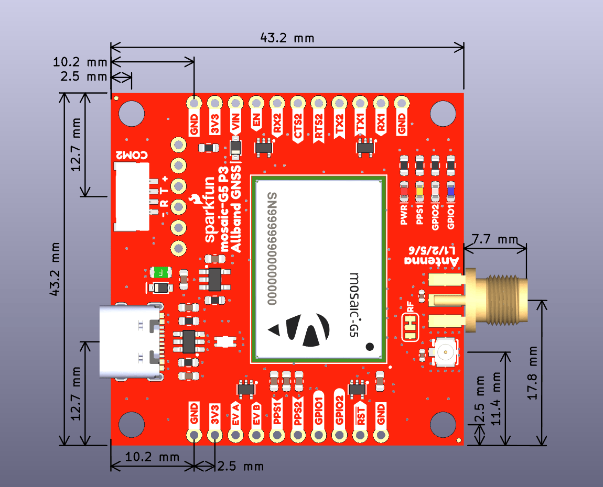
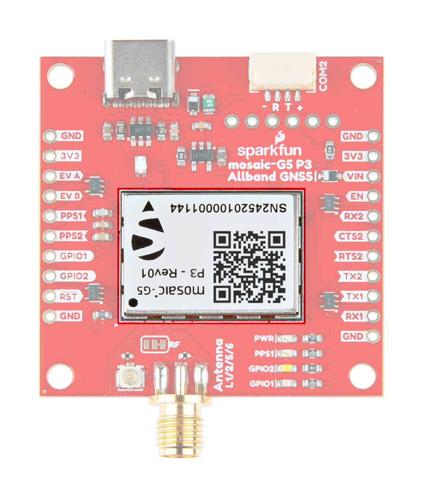
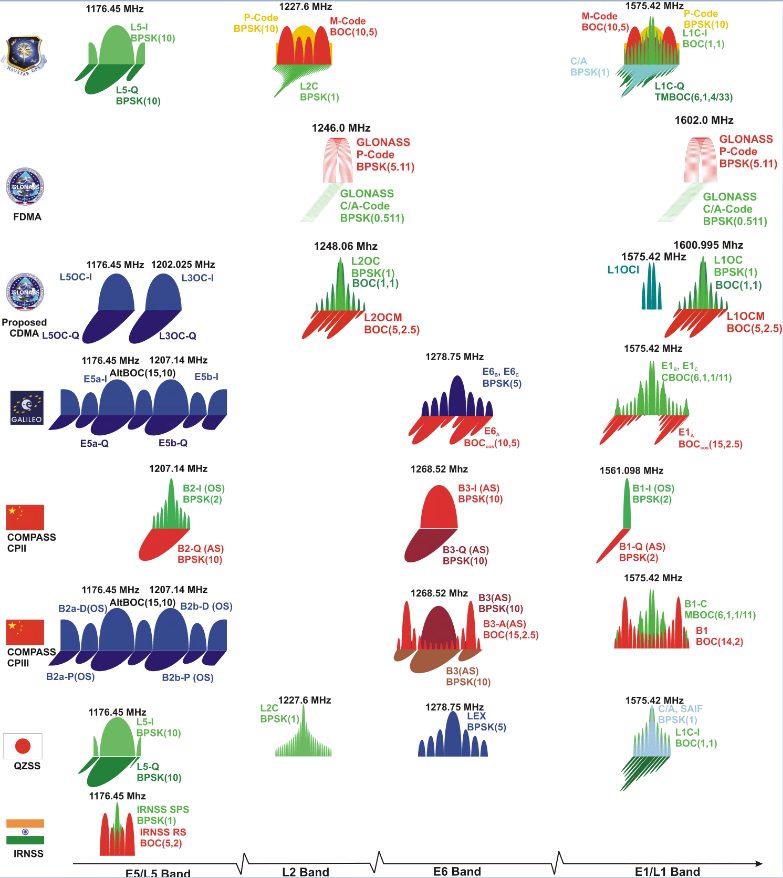
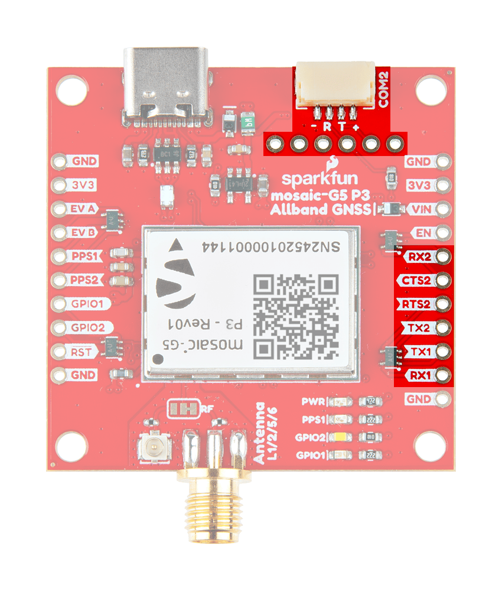
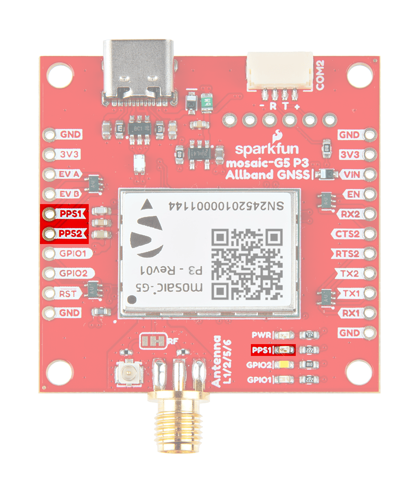
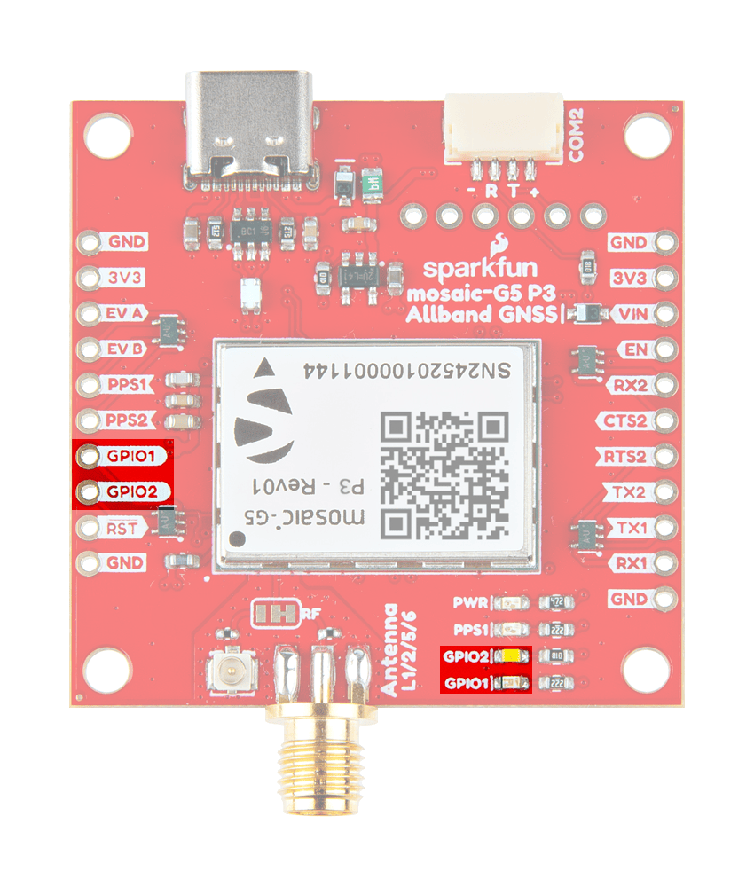
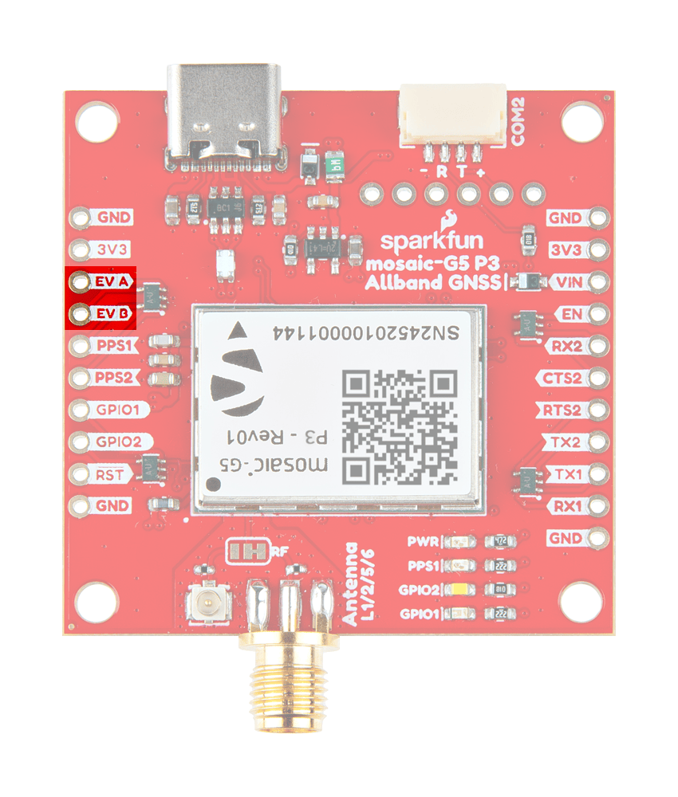
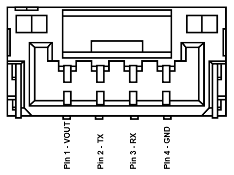

Hardware Overview
Important: Read Before Use!
ESD Sensitivity
The mosaic-G5 P3 GNSS receiver is sensitive to ESD. Use a proper grounding system to make sure that the working surface and the components are at the same electric potential.
Info
As recommended by the manufacturer, we highly recommend that users take the necessary precautions to avoid damaging their GNSS receiver.
- The All-band GNSS RTK breakout board features ESD protection on the USB-C connector and breakout's I/O:
- USB data lines
- I/O PTH pads
- JST connector and BlueSMiRF header pins
- The mosaic-G5 P3 GNSS receiver features internal ESD protection to the
ANT_1antenna input.
Active Antenna
Never inject an external DC voltage into the SMA connector for the GNSS antenna, as it may damage the mosaic-G5 P3 GNSS receiver. For instance, when using a splitter to distribute the antenna signal to several GNSS receivers, make sure that no more than one output of the splitter passes DC. Use DC-blocks otherwise.
Design Files
-
Design Files
- Schematic
- KiCad Files
- STEP File
- Board Dimensions:
- 1.70" x 1.70" (43.2mm x 43.2mm)
-
Manipulate 3D Model
Controls Mouse Touchscreen Zoom Scroll Wheel 2-Finger Pinch Rotate Left-Click & Drag 1-Finger Drag Move/Translate Right-Click & Drag 2-Finger Drag 
Dimensions of the mosaic-G5 P3 GNSS breakout board. Need more measurements?
For more information about the board's dimensions, users can download the KiCad files for this board. These files can be opened in KiCad and additional measurements can be made with the measuring tool.
KiCad - Free Download!
KiCad is free, open-source CAD program for electronics. Click on the button below to download their software. (*Users can find out more information about KiCad from their website.)
Measuring Tool
This video demonstrates how to utilize the dimensions tool in KiCad, to include additional measurements:
{kind=link}
Board Layout
The SparkFun Allband GNSS RTK Breakout - mosaic-G5 P3 features the following:
{kind=link}
Layout of the major components on the breakout board.
-
- USB-C Connector
- The primary inteface for powering and interacting with the board
-
- mosaic-G5 P3 GNSS Receiver
- The Septentrio mosaic-G5 P3 GNSS receiver
-
- Header Pins
- Exposes pins to power the board and breaks out the interfaces of the mosaic-G5 P3 GNSS receiver
-
- BlueSMiRF Header Pins
- Exposes the
UART2interface of the mosaic-G5 P3 GNSS receiver
-
- JST Connector
- Exposes the
UART2interface of the mosaic-G5 P3 GNSS receiver
-
- Status LEDs
- LED status indicators for the mosaic-G5 P3 GNSS receiver
-
Antenna L1/2/5/6RF Connectors- SMA and U.FL (optional) connectors for an external GNSS antenna
USB-C Connector
The USB connector is provided to power and interface with the mosaic-G5 P3 GNSS receiver. For most users, it will be the primary method for communicating with the GNSS receiver.
{kind=link}
USB-C connector on the All-band GNSS RTK breakout board.
Power
The All-band GNSS RTK breakout board only requires 3.3V to power all of the board's components. The simplest method to power the board is through the USB-C connector. Alternatively, the board can also be powered through the VIN pin.
{kind=link}
All-band GNSS RTK breakout board's power connections.
Below, is a general summary of the power circuitry on the board, broken out as PTH pins:
VUSB- The voltage from the USB-C connector, usually 5V- Input Voltage Range: 4.4 - 5.5 V
- Power source for the entire board
- Powers the 3.3V voltage regulator (RT9080), which can source up to 600mA
- When enabled, it can also power the BlueSMiRF header and JST connector (see the Jumpers section)
VIN- Alternate input supply voltage for the board- Input Voltage Range: 1.2 - 5.5V (1)
- Power source for the entire board
- Powers the 3.3V voltage regulator (RT9080), which can source up to 600mA
- When enabled, it can also power the BlueSMiRF header and JST connector (see the Jumpers section)
3V3- Provides a regulated 3.3V from the RT9080, using the power supplied from theVINpin or USB-C connector- Used to power the mosaic-G5 P3 GNSS receiver and its active antenna preamplifier, the LEDs, and the power pin of the JST connector and BlueSMiRF header
- Controlled by the
ENpin, which is enabled by default
EN- Enables the voltage output from the RT9080, 3.3V voltage regulator- Enabled by default (active
HIGH)
- Enabled by default (active
RST- Used to reset the mosaic-G5 P3 GNSS receiver- Connected to the
nRST_INinput-only pin with an internal pull-up resistor - Driving the pin
LOWtriggers the restart of the mosaic-G5 P3 GNSS receiver
- Connected to the
GND- The common ground or the 0V reference for the voltage supplies.
- While the RT9080 LDO regulator has an input voltage range of 1.2 - 5.5V, a minimum supply voltage of 3.5V is recommended for a 3.3V output.
JST Connector
The VSEL pin of the BlueSMiRF header and + pin of the JST connector are designed to operate as a voltage output. An input voltage can be supplied through these pins; however, users should be mindful of any voltage contention issues. Additionally, users can modify the VSEL jumper to change the output voltage level of these pins.
Info
For more details, users can reference the schematic and the datasheets of the individual components on the board.
Power Consumption
The power consumption of the mosaic-G5 P3 GNSS receiver depends on the GNSS signals enabled and the positioning mode. The table below, lists the average power consumption for common configurations. The current listed, is based on a supply voltage of 3.3V.
| GNSS Signals | Power (mW) | Current (mA) |
|---|---|---|
| GPS/GLONASS L1/L2 | 440 | 133 |
| All signals from all GNSS constellations | 570 | 173 |
| All signals from all GNSS constellations +L-band | 670 | 203 |
Source: mosaic-G5 P3 Hardware Manual
mosaic-G5 P3
The centerpiece of the All-band GNSS RTK breakout board, is the mosaic-G5 P3 GNSS receiver from Septentrio. Their mosaic-G5 P3 modules are low-power, multi-band, multi-constellation GNSS receivers capable of delivering centimeter-level precision in a small form factor without compromising on performance. They provide strong positioning reliability in challenging environments and are tailored for applications such as delivery or light show drones. It also features Septentrio's unique AIM+ technology for interference mitigation and anti-spoofing, which ensures their best-in-class reliability and scalable position accuracy.

The mosaic-G5 P3 GNSS receiver on the All-band GNSS RTK breakout board.
{kind=link}
Features:
- Operating Voltage: 3.135 - 3.465V
- GNSS Support
- GPS:
L1C/A,L1C,L2C,L2PY,L5 - GLONASS:
L1CA,L2CA,L2P,L3 CDMA - Beidou:
B1I,B1C,B2a,B2b,B2I,B3I - Galileo:
E1,E5a,E5b,E6 - QZSS:
L1C/A,L1 C/B,L2C,L5,L6
- GPS:
- Time to Fix
- Cold Start: < 35s
- Warm: < 10s
- Reacquisition: 1s
-
Position Accuracy
Correction Horizontal Vertical RTK 0.6cm (±0.5ppm)
~0.25"1cm (±1ppm)
~.4"DGNSS 40cm
~1.3'70cm
~2.3'Standalone 1.2m
~4'1.9m
~6.2'
- Update Rate: 20Hz
- Latency: < 10ms
- Event Accuracy: < 3ns
- Interfaces:
- UART (x2)
- USB device (2.0, HS)
- GPIO user programmable (x2)
- Event markers (x2)
- Configurable PPS out (x2)
- Protocols:
- Septentrio Binary Format (SBF)
- NMEA 0183, v2.3, v3.03, V4.0
- RTCM v3.x (MSM included)
- Antenna Specifications
- Preamplification Range: 15-50dB
- Bias Voltage: 3.0 - 5.5V
- 789 Hardware Channels
- Operating Temperature: -40 - 85°C
- Package Size: 16.4mm x 22.8mm x 2.4mm
- Weight: 2.2g
Tip
The capabilities of each receiver is defined by a the optional features that are enabled. The capabilities of the receiver depend on a combination of the hardware model and version, the firmware version, and the set of permissions enabled for the optional features. Permissions are further explained in section 1.17. The command getReceiverCapabilities will list the receiver's capabilities. Otherwise, using RxControl (go to Help > Receiver Interface > Permitted Capabilities).
Frequency Bands
The mosaic GNSS receivers are multi-band, multi-constellation GNSS receivers. Below, are charts illustrating the frequency bands utilized by all the global navigation satellite systems and the ones supported by the mosaic-G5 P3 GNSS receiver.
{kind=link}
The frequency bands supported by the mosaic-G5 P3 GNSS receiver.
Frequency bands of the global navigation satellite systems. (Source: Tallysman)
Info
For a comparison of the frequency bands supported by the mosaic GNSS receivers, refer to section 3.1 of the hardware manual.
What are Frequency Bands?
A frequency band is a section of the electromagnetic spectrum, usually denoted by the range of its upper and lower limits. In the radio spectrum, these frequency bands are usually regulated by region, often through a government entity. This regulation prevents the interference of RF communication; and often includes major penalties for any interference with critical infrastructure systems and emergency services.

However, if the various GNSS constellations share similar frequency bands, then how do they avoid interfering with one another? Without going too far into detail, the image above illustrates the frequency bands of each system with a few characteristics specific to their signals. Wit these characteristics in mind, along with other factors, the chart can help users to visualize how multiple GNSS constellations might co-exist with each other.
For more information, users may find these articles of interest:
Position Accuracy
The accuracy of the position reported from the mosaic-G5 P3 GNSS receiver, can be improved based upon the correction method being employed. Currently, RTK corrections provide the highest level of accuracy; however, users should be aware of certain limitations of the system:
- RTK technique requires real-time correction data from a reference station or network of base stations.
- RTK corrections are signal specific (i.e. an RTK network might provide corrections on only
E5band notE5a).
- RTK corrections are signal specific (i.e. an RTK network might provide corrections on only
- The range of the base stations will vary based upon the RTK method being employed.
- The reliability of RTK corrections are inherently reduced in multipath environments. However, with Septentrio's multipath mitigation technology (APME+) on the mosaic-G5 P3, these errors are significantly reduced when compared to multipath mitigation techniques that modify the correlators in the tracking channels.
RTK Corrections
To understand how RTK works, users will need a more fundamental understanding of the signal error sources.
-
Real-Time Kinematics Explained
-
What is Correction Data?
-
GNSS Corrections Demystified
Tip
For the best performance, we highly recommend that users configure the GNSS receiver to utilize/provide RTK corrections with a compatible L1/L2/L5/L6 (All-band) GNSS antenna and utilize a low-loss cable.
Peripherals and I/O Pins
The mosaic-G5 P3 features several peripherals and I/O pins. Some of these are broken out as pins on the All-band GNSS RTK breakout board; whereas, others are broken out to their specific interface (i.e. USB connector, etc.). Additionally, some of their connections are tied to other components on the board.
{kind=link}
The peripherals and I/O pins on the All-band GNSS RTK breakout board.
Interfaces:
- USB device (2.0, HS)
- 2x UART (LVTTL, up to 4 Mbps)
- 2x GPIO user programmable
- 2x Event markers
- 2x Configurable PPS out
For most users, this will be the primary interface for the mosaic-G5 P3 GNSS receiver.
Info
When a GNSS receiver is initially connected to a computer, two virtual COM ports are emulated. These can be used as standard COM ports to communicate with the GNSS receiver.
The mosaic-G5 P3 has two dedicated UART interfaces. Each of the UART ports can be configured and operated separately.

{kind=link}
Info
By default, the UART ports are configured with the following settings:
- Baudrate: 115200bps
- Data Bits: 8
- Parity: No
- Stop Bits: 1
- Flow Control: None
The COM port settings are set with the setCOMSettings command.
UART2
The UART2 or COM2 interface features flow control pins, which are disabled by default. The interface can also be accessed through the JST connector and/or BlueSMiRF header.
Bus Contention
To avoid bus contention issues, make sure only one device is connected to any of these options.
Pin Connections
When connecting to the board's UART pins, the pins should be connected based upon the flow of their data. For example, when utilizing the Telemetry Radio or the LoRaSerial Kit:

The 3.3V PPS signals can be access through the PPSx pins. The polarity, frequency, and pulse width of these signals can be configured with the setPPSParameters and setPPS2Parameters commands.
PPS signal outputs on the All-band GNSS RTK breakout board.
{kind=link}
Info
During module startup, these pins are first in high-Z mode for about 1s. Then they are driven low for another second before being driven to the intended user-selected level about 2s after powering up the module.
GPIO Pins
It is possible to use these pins as general-purpose I/O pins, but their maximum current limited to 8mA.
PPS1 LED
The PPS1 signal is connected to the PPS LED, to be used as a visual indicator. There is also PPS1 jumper attached to the PPS LED. For low power applications, the jumper can be cut to disable the PPS LED.
The mosaic-G5 P3 GNSS receiver features two general purpose I/O pins. These pins have a maximum output current of 16 mA and pulled-up by default. These pins are also connected to the GPIO1 and GPIO2 status LEDs, whose function (level or LED status indicator) can be programmed with the setGPIO1Mode and setGPIO2Mode commands.

{kind=link}
Along with its polarity, the output signal from these pins can be used to indicate one of the following status modes:
PVTLED: LED lights when a PVT solution is available.RTKLED: LED is off if the PVT is not in RTK mode, blinks in float RTK and is solid on in fixed RTK.TRACKLED: Tracked satellite indicator.DIFFCORRLED: Differential correction indicator.- In rover PVT mode, this LED reports the number of satellites for which differential corrections have been provided in the last received differential correction message (RTCM or CMR).
- If the corrections are received from geostationary satellites over the L-band, the LED will be on for about 1 second, then blink fast twice.
Info
By default, these pins are configured in input mode with pull-up. Also, for about 2 seconds after powering or resetting the module, these pins are in input mode (pulled up) regardless of the user configuration stored in the boot configuration file.
LED Jumpers
There are jumpers attached to the GPIOx LEDs. For low power applications, the jumpers can be cut to disable their respective LED.
The mosaic-G5 P3 GNSS receiver features two event input pins, which can be used to time tag external events with a time resolution of 3ns. Use the setEventParameters command to configure these pins.

{kind=link}
Tip
To properly detect event triggers:
- There must be a minimum of 5ms between two events on the same
EVENTxpin - There must be no more than 20 events in any interval of 100ms, on all the
EVENTxpins
BlueSMiRF Header
The All-band GNSS RTK breakout features a 6-pin BlueSMiRF PTH header that is compatible with may of our serial devices (i.e. UART adapters, serial data loggers,BlueSMiRF v2 Bluetooth® serial link, and microcontrollers). Users can access the UART2 interface of the mosaic-G5 P3 GNSS receiver through the BlueSMiRF header pins.
{kind=link}
The 6-pin BlueSMiRF PTH header on the All-band GNSS RTK breakout board.
Info
By default, the UART ports are configured with the following settings:
- Baudrate: 115200bps
- Data Bits: 8
- Parity: No
- Stop Bits: 1
- Flow Control: None
The COM port settings are set with the setCOMSettings command.
UART2
The UART2 or COM2 interface features flow control pins, which are disabled by default. The interface can also be accessed through the JST connector and/or PTH pins.
Bus Contention
To avoid bus contention issues, make sure only one device is connected to any of these options.
VSEL Pin
By default, the power pin (i.e. VSEL or Pin 4) of the BlueSMiRF header is connected to 3.3V and configured as a power output. An input voltage can be supplied through the pin; however, users should be mindful of any voltage contention issues.
Jumper
By default, the VSEL jumper is connected to 3V3 pad for a regulated 3.3V output. However, users can modify the jumper to utilize the voltage supplied from either the USB or VIN inputs.
JST Connector
The All-band GNSS RTK breakout features a 4-pin JST GH connector, which is polarized and locking. Users can access the UART2 interface of the mosaic-G5 P3 GNSS receiver through the JST connector. The JST connector is compatible with external devices, such as the SiK Telemetry Radio V3 for RTK corrections using one of our JST adapter cables.
{kind=link}
The JST connector on the All-band GNSS RTK breakout board.
Info
By default, the UART ports are configured with the following settings:
- Baudrate: 115200bps
- Data Bits: 8
- Parity: No
- Stop Bits: 1
- Flow Control: None
The COM port settings are set with the setCOMSettings command.
UART2
The UART2 or COM2 interface features flow control pins, which are disabled by default. The interface can also be accessed through the BlueSMiRF header and/or PTH pins.
Bus Contention
To avoid bus contention issues, make sure only one device is connected to any of these options.
Pin Connections
When connecting the All-band GNSS RTK breakout board to other products, users need to be aware of the pin connections between the devices. and voltage ranges of the products. Below, is a table of the pin connections for the JST connector on the All-band GNSS RTK breakout board.

{kind=link}
| Pin Number |
1 (Left Side) |
2 | 3 |
4 (Right Side) |
|---|---|---|---|---|
| Label | + |
T |
R |
- |
| Function |
Voltage Output - Default: 3.3V - Selectable: 3.3V or 5V |
UART2 - Transmit |
UART2 - Receive |
Ground |
As documented in the LoRaSerial product manual, the pin connections between a host system and the LoRaSerial Kit radio is outlined in the image below.
COM ports on the All-band GNSS RTK breakout board.
When connecting the All-band GNSS RTK breakout board to our radios, only the RX, TX, and GND connections are required as outlined in the table below. By default, flow control is disabled and the connections are unnecessary.
| Board | RX | TX | GND |
|---|---|---|---|
| Radio | TX | RX | GND |
VSEL Pin
By default, the power pin (i.e. + or Pin 1) of the JST connector is connected to 3.3V and configured as a power output. An input voltage can be supplied through the pin; however, users should be mindful of any voltage contention issues.
Jumper
By default, the VSEL jumper is connected to 3V3 pad for a regulated 3.3V output. However, users can modify the jumper to utilize the voltage supplied from either the USB or VIN inputs.
External Antenna
The All-band GNSS RTK breakout board has two options for connecting an external GNSS antenna; the Antenna L1/2/5/6 U.FL and SMA connectors. These inputs are DC-biased and ESD-protected, so an active antenna can directly be connected without additional components. By default, the SMA connector is the primary interface. In order to utilize the U.FL connector, the RF jumper must be modified to redirect the signal path from the SMA connector.
{kind=link}
The SMA and U.FL connectors to attach a GNSS antenna to the All-band GNSS RTK breakout board.
Users will need to connect a compatible GNSS antenna to the Antenna L1/2/5/6 connector. The type of antenna used with the mosaic-G5 P3 GNSS receiver affects the overall accuracy of the positions calculated by the GNSS receiver.
- An active antenna often features a LNA. This allows the GNSS receiver to boost the signal received by the GNSS receiver without degrading the SNR.
- The more bands an antenna supports, the greater the performance.
- Faster acquisition time.
- Access and support for the
L5GPS band can potentially mitigate multi-path errors. - Supporting more frequency bands, allows a GNSS receiver to be less susceptible to jamming and spoofing.
There are other key parameters related to an antenna that can make or break the signal reception from the satellites. These include, but are not limited to the operation frequency, gain, polarization, efficiency and overall loss.
Tip
For the best performance, we recommend users choose a compatible L1/L2/L5/L6 active GNSS antenna and utilize a low-loss cable. Also, don't forget that GNSS signals are fairly weak and can't penetrate buildings or dense vegetation. The GNSS antenna should have an unobstructed view of the sky.
Info
The VANT pin of the GNSS receiver provides external power for an active antenna. By default, this supply voltage is configured at 3.3V.
Danger
Never inject an external DC voltage into the RF connection for the GNSS antenna, as it may damage the mosaic-G5 P3 GNSS receiver. For instance, when using a splitter to distribute the antenna signal to several GNSS receivers, make sure that no more than one output of the splitter passes DC. Use DC-blocks otherwise.
Status LEDs
{kind=link}
The status indicator LEDs on the All-band GNSS RTK breakout board.
There are four status LEDs on the All-band GNSS RTK breakout board:
PWR- Power (Red)- Turns on once power is supplied through the USB-C connector or
VINconnections
- Turns on once power is supplied through the USB-C connector or
PPS1- Pulse-Per-Second (Yellow)- Indicates the pulse-per-second signal from the
PPS1output (see the PPS Output section)
- Indicates the pulse-per-second signal from the
GPIO1(Blue) andGPIO2(White)-
These LEDs are controlled through the GPIO pins and operate based on configured mode
LED Behavior
The GPIO1
andGPIO2LEDs will operate based on the following status modes, which are programmed with thesetGPIO1ModeandsetGPIO2Mode` commands.PVTLED: LED lights when a PVT solution is available.RTKLED: LED is off if the PVT is not in RTK mode, blinks in float RTK and is solid on in fixed RTK.-
TRACKLED: Tracked satellites indicator.LED Behaviour Number of Satellites in Tracking Blinks fast and continuously
(10 times per second)0 Blinks once, then pauses 1-2 Blinks twice, then pauses 3-4 Blinks 3 times, then pauses 5-6 Blinks 4 times, then pauses 7-8 Blinks 5 times, then pauses 9+ -
DIFFCORLED: Differential correction indicator.-
In rover PVT mode, this LED reports the number of satellites for which differential corrections have been provided in the last received differential correction message (RTCM or CMR).
LED Behaviour Number of Satellites w/ Corrections LED Off No differential correction message received Blinks fast and continuously
(10 times per second)0 Blinks once, then pauses 1-2 Blinks twice, then pauses 3-4 Blinks 3 times, then pauses 5-6 Blinks 4 times, then pauses 7-8 Blinks 5 times, then pauses 9+ -
If the corrections are received from geostationary satellites over the L-band, the LED will be on for about 1 second, then blink fast twice.
-
-
Jumpers
Never modified a jumper before?
Check out our Jumper Pads and PCB Traces tutorial for a quick introduction!
-
How to Work with Jumper Pads and PCB Traces
There are nine jumpers on the board that can be used to easily modify the hardware connections on the board.
{kind=link}
The jumper on the top of the All-band GNSS RTK breakout board.
{kind=link}
The jumpers on the back of the All-band GNSS RTK breakout board.
RF- This jumper can be modified to configure the RF input, for the external GNSS antenna, between the SMA and U.FL connectors.
Info
By default, the jumper is configured to utilize the SMA connector.
VSEL-
This jumper can be modified to configure/disconnect the
VCCpin of the 4-pin locking JST connector and BlueSMiRF header to/from3V3or5Vpower.Info
By default, the jumper is configured to supply 3.3V from the All-band GNSS RTK breakout board.
SHLD- This jumper can be cut to disconnect the shield of the USB-C connector from the board's ground plane.
There are four jumpers that control power to the status LEDs on the board.
PWR- This jumper can be cut to remove power from the red, power LED.PPS1- This jumper can be cut to remove power from the yellow LED, which is connected to the PPS signal.GPIO2- This jumper can be cut to remove power from the white LED that is connected to theGPIO2pin.GPIO1- This jumper can be cut to remove power from the blue LED that is connected to theGPIO1pin.
Info
By default, all the jumpers are connected, to power the status LEDs. For low power applications, users can cut the jumpers to disconnect power from each of the LEDs.
VREF-
Controls the reference voltage for the internal TXCO
In- Voltage input for the internal TXCOOut- Reference voltage to power the internal TXCO
REF-
Controls the reference clock signal
In- Reference clock signal inputOut- 10-MHz signal from the internal TCXO